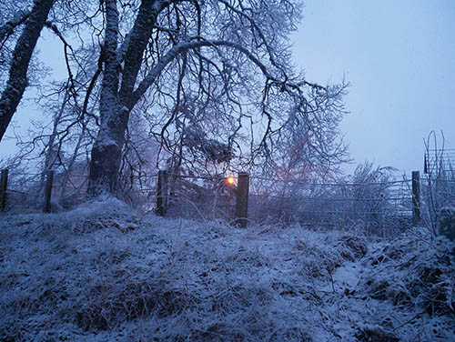

About Releases Listen Film & TV Fashion & Ads

A radiant duality lurks within the oeuvre of Oliver Coates, the British cellist, film composer and electronic producer whose performance career and compositional output have arisen in tandem. This sensibility has expanded his work into visual worlds, which includes his lauded scoring of films such as Aftersun, Pillion and The History of Sound. He has also scored the films Occupied City, The Stranger and 100 Nights of Hero.
His impulse to connect with other artists has brought celebrated collaborations with Malibu, Joanne Robertson, Arca and Jonny Greenwood, as well as with Mica Levi on the 2016 LP Remain Calm.
Coates joined the RVNG Intl. family in 2018 with Shelley’s on Zenn-La, followed by the shoegaze melodic and ambient sensibilities of skins n slime in 2020. In 2024 he unveiled the somatic chiaroscuro of Throb, shiver, arrow of time, further collapsing the digital into the analogue and vice versa. A former principal cellist for London Contemporary Orchestra, Aurora Orchestra and London Sinfonietta, Coates’ expressive and hypnotic renderings of his instrument are a given. In 2017 he opened for Radiohead at Old Trafford Stadium and toured as opening act for Thom Yorke throughout Europe and the US in 2018. He headlined a concert curated by David Lynch at the Manchester International Festival and has directed the live music for Dior shows under Maria Grazia Chiuri in Rome, Edinburgh, Athens and Mumbai. He has curated two editions of DEEP∞MINIMALISM at Southbank Centre in London, where he has also been an artist in residence, featuring the music of Éliane Radigue, Liz Harris, Pauline Oliveros, Hanne Darboven, Morton Feldman, Daphne Oram and Malibu. His full-length work for strings and pre-recorded sound, Shorelines, based on the North Sea Flood of 1953, commissioned by Cryptic, won a BASCA award for Best Stage Work in 2018. His scores for films by Lawrence Lek have been awarded the Converse x Dazed Emerging Art Award 2015 (for Unreal Estate) and the 2016 Vordemburge-Gildewart Artist Prize (for QE3, a Glasgow International commission). He received the Royal Philharmonic Society Breakthrough Award for Young Artist 2011. …almost unspeakably beautiful, the kind of thing you might request to have played at your funeral or on your deathbed (Philip Sherburne, Pitchfork)
…the most alluring and hypnotising set yet… Coates managed to plummet the audience into an endless rabbit hole of musical beauty, a trance in which linear time and space ceased to exist (The Mancunion)
Contact
Film & TV: Bradley Rainey, WME
Publishing: Bright Notion
Management: Southern Bird